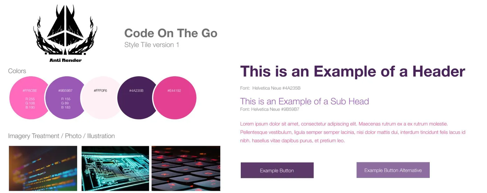
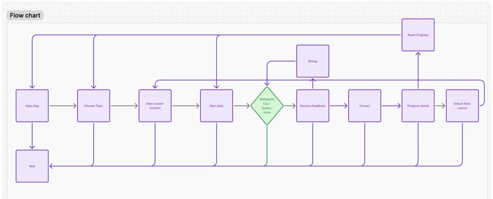
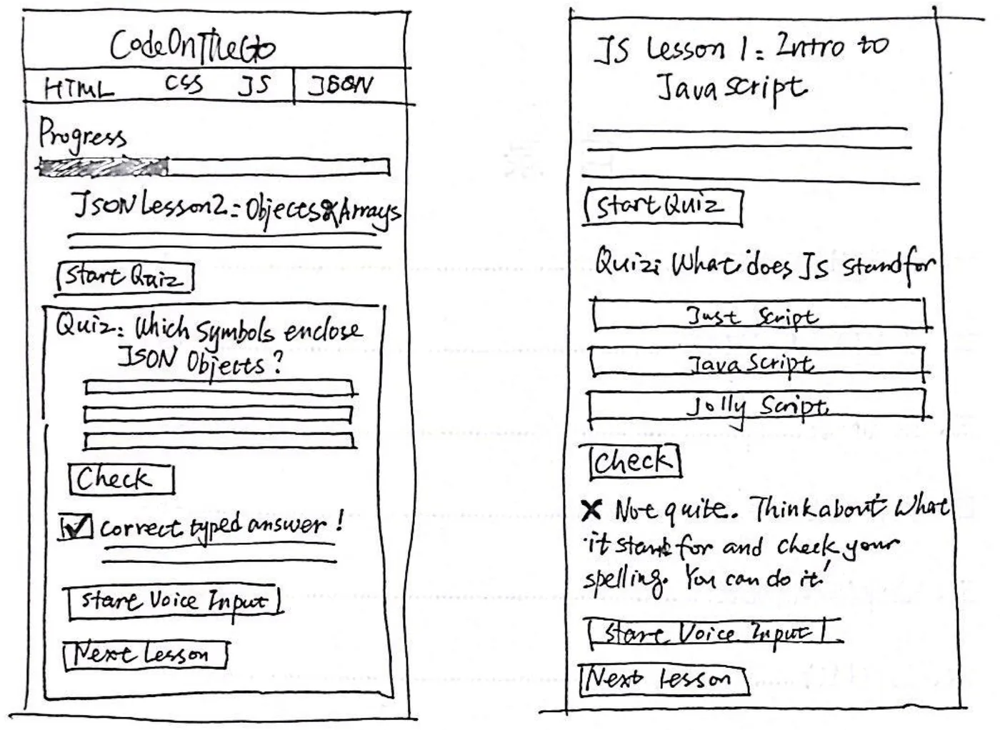
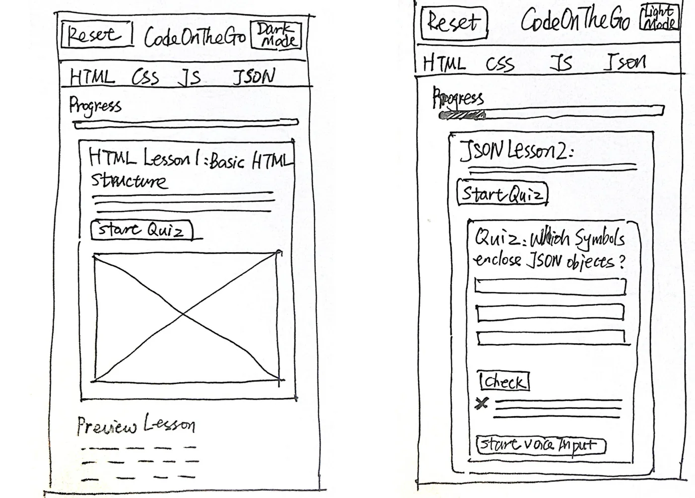
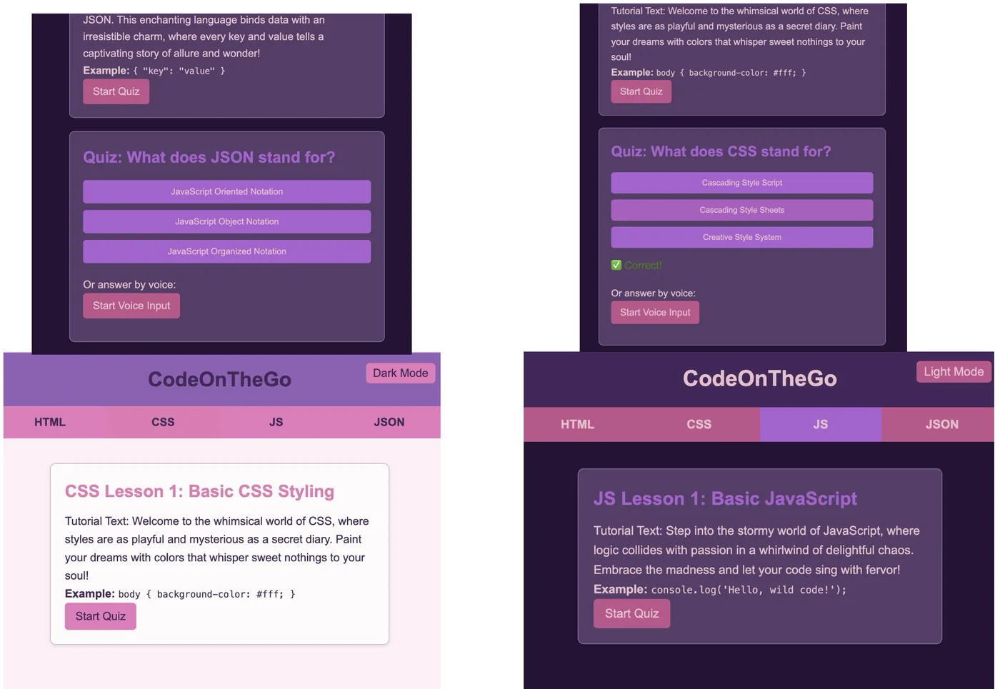
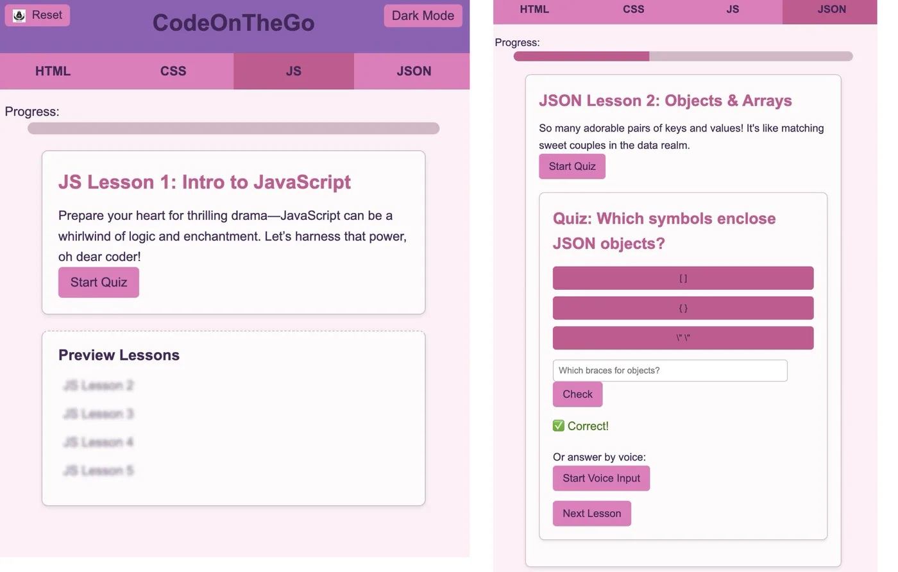
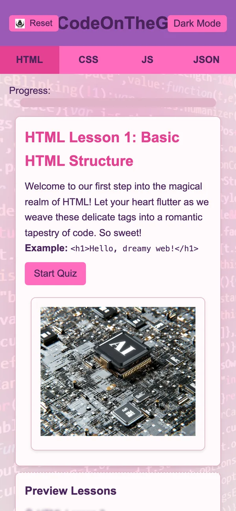
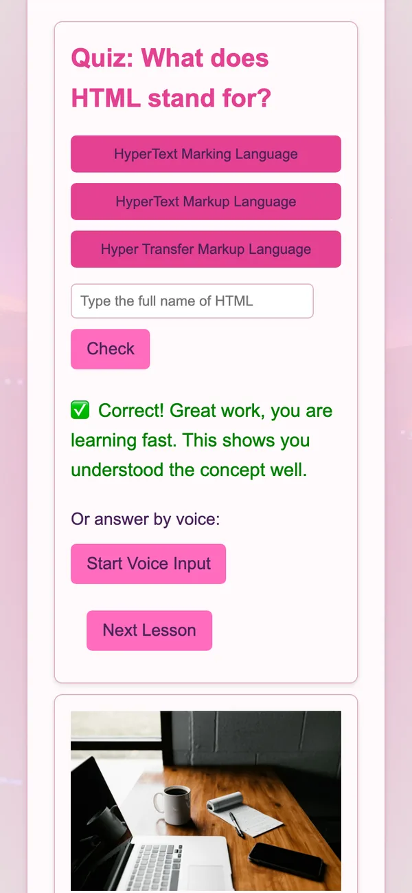
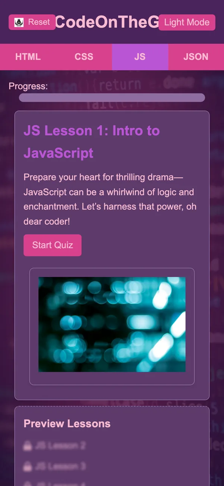

Background背景背景背景ContexteHintergrund
CodeOnTheGo is for beginners who want to learn coding in the short gaps of a busy day.
CodeOnTheGo 面向想在忙碌日程的零碎时间里学编程的初学者。
CodeOnTheGo 面向想在忙碌行程的零碎時間裡學程式設計的初學者。
CodeOnTheGo は、忙しい一日のすき間時間にプログラミングを学びたい初心者のためのアプリです。
CodeOnTheGo s’adresse aux débutants qui veulent apprendre à coder dans les petits creux d’une journée chargée.
CodeOnTheGo ist für Einsteiger, die in den kurzen Lücken eines vollen Tages programmieren lernen wollen.
Coding tutorials are too long and too dense for a phone编程教程太长、太密，不适合在手机上学程式教學太長、太密，不適合在手機上學プログラミングの教材は、スマホで学ぶには長くて密度が高すぎるLes tutoriels de code sont trop longs et trop denses pour un téléphoneProgrammier-Tutorials sind für das Handy zu lang und zu dicht
Beginners in informal testing felt overwhelmed by dense tutorials and preferred short, visual sessions. Typing code on a phone keyboard was a chore. The project set one target: a single lesson should fit into a short break.
参与非正式测试的初学者觉得教程内容太密集，更喜欢简短、直观的学习。在手机键盘上打代码也很费劲。项目因此定下一个目标：一节课要能在一次短暂的休息里学完。
參與非正式測試的初學者覺得教學內容太密集，更喜歡簡短、直觀的學習。在手機鍵盤上打程式碼也很費勁。專案因此定下一個目標：一節課要能在一次短暫的休息裡學完。
非公式テストに参加した初心者は、密度の高い教材に圧倒され、短く視覚的な学習を好みました。スマホのキーボードでコードを打つのも負担でした。そこでプロジェクトは、1 レッスンを短い休憩の中で終えられるようにするという目標を立てました。
Lors de tests informels, les débutants se sentaient submergés par des tutoriels denses et préféraient des séances courtes et visuelles. Taper du code sur un clavier de téléphone était pénible. Le projet s’est fixé un objectif : une leçon doit tenir dans une courte pause.
In informellen Tests fühlten sich Einsteiger von dichten Tutorials überfordert und bevorzugten kurze, visuelle Einheiten. Code auf einer Handytastatur zu tippen war mühsam. Das Projekt setzte sich ein Ziel: Eine Lektion soll in eine kurze Pause passen.
It is for career changers and students with little free time它面向空闲时间很少的转行者和学生它面向空閒時間很少的轉職者和學生対象は、自由な時間が少ないキャリアチェンジ中の人と学生Elle s’adresse aux personnes en reconversion et aux étudiants qui ont peu de temps libreSie ist für Quereinsteiger und Studierende mit wenig freier Zeit
Two personas came out of the research. Alex Chen, 29, is a former barista moving into front-end development; he uses any 15-minute window to practise and wants instant feedback. Jamie Zhang, 21, is a second-year digital arts student with little coding experience; she learns on her subway commute, and visuals and fast interaction keep her engaged.
研究得出两个用户画像。Alex Chen，29 岁，前咖啡师，正在转行做前端开发；他会利用任何 15 分钟的空档练习，希望马上得到反馈。Jamie Zhang，21 岁，数字艺术专业二年级学生，编程经验很少；她在地铁通勤时学习，画面和快速的互动能让她保持投入。
研究得出兩個人物誌。Alex Chen，29 歲，前咖啡師，正在轉職做前端開發；他會利用任何 15 分鐘的空檔練習，希望馬上得到回饋。Jamie Zhang，21 歲，數位藝術系二年級學生，程式經驗很少；她在捷運通勤時學習，畫面和快速的互動能讓她保持投入。
リサーチから 2 つのペルソナが生まれました。Alex Chen（29 歳）は元バリスタで、フロントエンド開発への転職を目指しています。15 分の空き時間があれば練習し、すぐにフィードバックがほしいと考えています。Jamie Zhang（21 歳）はデジタルアート専攻の 2 年生で、コーディング経験はわずかです。地下鉄での通勤中に学び、ビジュアルとテンポのよい操作が集中を支えます。
La recherche a fait émerger deux personas. Alex Chen, 29 ans, ancien barista, se reconvertit dans le développement front-end ; il profite de chaque créneau de 15 minutes pour pratiquer et veut un retour immédiat. Jamie Zhang, 21 ans, étudiante en deuxième année d’arts numériques, a peu d’expérience en code ; elle apprend pendant ses trajets en métro, et les visuels comme l’interaction rapide la gardent motivée.
Aus der Recherche entstanden zwei Personas. Alex Chen, 29, ehemaliger Barista, wechselt in die Front-End-Entwicklung; er nutzt jedes 15-Minuten-Fenster zum Üben und will sofort Feedback. Jamie Zhang, 21, studiert digitale Kunst im zweiten Jahr und hat wenig Programmiererfahrung; sie lernt in der U-Bahn, und Bilder und schnelle Interaktion halten sie bei der Sache.


The idea came from the brief and from watching a commute灵感来自课程要求和一次通勤观察靈感來自課程要求和一次通勤觀察着想は課題の条件と、通勤の観察からL’idée vient du brief et de l’observation d’un trajetDie Idee kam aus dem Briefing und aus der Beobachtung eines Arbeitswegs
The course brief asked for a mobile web app used away from keyboard and mouse, with an education app as one of the themes. Early ideation explored an exhibition navigator for events such as Comic Con before the project took the education theme. Watching a student use a phone on public transport set the direction: short lessons, tap-based answers and optional voice input.
课程要求设计一款脱离键盘和鼠标使用的手机网页应用，“教育类应用”是可选主题之一。早期构思探索过一个面向 Comic Con 等展会的导览应用，之后项目转向教育主题。对一位学生在公共交通上用手机的观察确定了方向：短课程、点选作答，以及可选的语音输入。
課程要求設計一款脫離鍵盤和滑鼠使用的手機網頁應用，「教育類應用」是可選主題之一。早期構思探索過一個面向 Comic Con 等展會的導覽應用，之後專案轉向教育主題。對一位學生在大眾運輸上用手機的觀察確定了方向：短課程、點選作答，以及可選的語音輸入。
課題は、キーボードとマウスから離れて使うモバイル Web アプリで、テーマの一つが教育アプリでした。初期のアイデア出しでは Comic Con のようなイベント向けの展示ナビも検討し、その後、教育のテーマに絞りました。公共交通機関でスマホを使う学生の観察から、短いレッスン、タップで答えるクイズ、任意の音声入力という方向が決まりました。
Le brief demandait une application web mobile utilisable sans clavier ni souris, avec parmi les thèmes une application éducative. Les premières idées exploraient un guide d’exposition pour des événements comme Comic Con, avant que le projet ne prenne le thème éducatif. L’observation d’une étudiante sur son téléphone dans les transports a fixé la direction : leçons courtes, réponses par appui et saisie vocale en option.
Das Briefing verlangte eine mobile Web-App für die Nutzung ohne Tastatur und Maus, eines der Themen war eine Lern-App. Erste Ideen drehten sich um einen Messe-Navigator für Events wie Comic Con, bevor das Projekt das Bildungsthema wählte. Die Beobachtung einer Studentin, die im Nahverkehr ihr Handy nutzt, gab die Richtung vor: kurze Lektionen, Antworten per Antippen und optionale Spracheingabe.
Short, steady practice helps beginners build a habit短而持续的练习帮初学者养成习惯短而持續的練習幫初學者養成習慣短く続ける練習が、初心者の習慣づくりを助けるUne pratique courte et régulière aide les débutants à prendre l’habitudeKurze, regelmäßige Übung hilft Einsteigern, eine Gewohnheit aufzubauen
People changing careers and full-time students, like the two personas, often find their free time in small pieces. CodeOnTheGo plays a role in turning those pieces into a coding habit: lessons are short, every answer gets encouragement and progress is saved, so a five-minute session still counts.
像这两个画像一样的转行者和全日制学生，空闲时间往往是零碎的。CodeOnTheGo 的作用是把这些零碎时间变成编程习惯：课程很短，每次作答都有鼓励，进度会自动保存，五分钟的学习也算数。
像這兩個人物誌一樣的轉職者和全職學生，空閒時間往往是零碎的。CodeOnTheGo 的作用是把這些零碎時間變成寫程式的習慣：課程很短，每次作答都有鼓勵，進度會自動儲存，五分鐘的學習也算數。
2 つのペルソナのように、転職を目指す人やフルタイムの学生は、自由な時間が細切れになりがちです。CodeOnTheGo は、その細切れの時間をコーディングの習慣に変える役割を担います。レッスンは短く、どの回答にも励ましがあり、進捗は自動で保存されるので、5 分の学習でも積み重なります。
Les personnes en reconversion et les étudiants à temps plein, comme les deux personas, ont souvent du temps libre en petits morceaux. CodeOnTheGo joue un rôle pour transformer ces morceaux en habitude de code : leçons courtes, encouragement à chaque réponse et progression sauvegardée, si bien qu’une séance de cinq minutes compte.
Quereinsteiger und Vollzeitstudierende wie die beiden Personas haben freie Zeit oft nur in kleinen Stücken. CodeOnTheGo hilft, aus diesen Stücken eine Programmiergewohnheit zu machen: Lektionen sind kurz, jede Antwort wird ermutigt und der Fortschritt bleibt gespeichert, so zählt auch eine Einheit von fünf Minuten.
The intended experience: open, learn one thing, close期望的体验：打开，学一件事，关掉期望的體驗：打開，學一件事，關掉目指す体験は、開いて、ひとつ学んで、閉じるL’expérience visée : ouvrir, apprendre une chose, refermerDas Ziel: öffnen, eine Sache lernen, schließen
A session should feel like a small win. A person picks a topic, reads one short lesson, answers one quiz and sees at once whether the answer is right. The next session starts where the last one ended, so nothing is lost when a break is over.
每次学习都应该像一次小胜利。用户选一个主题，读一节短课，做一道小测验，马上知道答案对不对。下一次从上次停下的地方继续，休息结束也不会丢失进度。
每次學習都應該像一次小勝利。使用者選一個主題，讀一節短課，做一道小測驗，馬上知道答案對不對。下一次從上次停下的地方繼續，休息結束也不會遺失進度。
1 回の学習が小さな成功体験になることを目指しています。トピックを選び、短いレッスンを 1 つ読み、クイズに 1 問答えると、正解かどうかがすぐ分かります。次回は前回の続きから始まるので、休憩が終わっても何も失われません。
Chaque séance doit ressembler à une petite victoire. On choisit un sujet, on lit une courte leçon, on répond à un quiz et on sait tout de suite si la réponse est juste. La séance suivante reprend là où la précédente s’est arrêtée : rien n’est perdu quand la pause se termine.
Jede Einheit soll sich wie ein kleiner Erfolg anfühlen. Man wählt ein Thema, liest eine kurze Lektion, beantwortet ein Quiz und sieht sofort, ob die Antwort stimmt. Die nächste Einheit beginnt dort, wo die letzte endete, also geht nichts verloren, wenn die Pause vorbei ist.
Why this form: a phone web app with large cards and three ways to answer为什么是这个形态：大卡片、三种作答方式的手机网页应用為什麼是這個形態：大卡片、三種作答方式的手機網頁應用このかたちの理由：大きなカードと 3 つの回答方法を持つスマホ向け Web アプリPourquoi cette forme : une appli web mobile avec de grandes cartes et trois façons de répondreWarum diese Form: eine Handy-Web-App mit großen Karten und drei Antwortwegen
The brief called for use away from keyboard and mouse, and the observed commuter studied on a phone in a shared, noisy space. A mobile web app runs in the phone’s browser. Large single-lesson cards suit short reading, and taps and voice replace most typing. A pink and purple palette makes code feel friendly to people who find programming intimidating.
课程要求脱离键盘和鼠标使用，而被观察的通勤者是在拥挤、嘈杂的空间里用手机学习。手机网页应用直接在手机浏览器里运行。一课一张的大卡片适合短时间阅读，点选和语音取代了大部分打字。粉紫色调让编程对觉得它很难的人显得更亲切。
課程要求脫離鍵盤和滑鼠使用，而被觀察的通勤者是在擁擠、吵雜的空間裡用手機學習。手機網頁應用直接在手機瀏覽器裡執行。一課一張的大卡片適合短時間閱讀，點選和語音取代了大部分打字。粉紫色調讓程式設計對覺得它很難的人顯得更親切。
課題はキーボードとマウスなしでの利用を求め、観察した通勤者は混み合った騒がしい場所でスマホを使って学んでいました。モバイル Web アプリはスマホのブラウザでそのまま動きます。1 レッスン 1 枚の大きなカードは短い読み物に向き、タップと音声が入力のほとんどを置き換えます。ピンクと紫の配色は、プログラミングに苦手意識がある人にもコードを親しみやすく見せます。
Le brief imposait un usage sans clavier ni souris, et l’étudiante observée apprenait sur son téléphone dans un lieu partagé et bruyant. Une appli web mobile tourne dans le navigateur du téléphone. De grandes cartes, une leçon chacune, conviennent à une lecture brève, et l’appui et la voix remplacent la plupart des saisies. Une palette rose et violette rend le code plus accueillant pour qui trouve la programmation intimidante.
Das Briefing verlangte die Nutzung ohne Tastatur und Maus, und die beobachtete Pendlerin lernte am Handy in einem vollen, lauten Raum. Eine mobile Web-App läuft im Browser des Handys. Große Karten mit je einer Lektion passen zum kurzen Lesen, Antippen und Sprache ersetzen das meiste Tippen. Eine Palette aus Rosa und Lila lässt Code freundlich wirken, auch für Menschen, die Programmieren einschüchternd finden.

Research研究研究リサーチRechercheRecherche
Research combined a commute observation, tests with two beginners, two personas and learning theory, then checked which web techniques could carry the design.
研究结合了通勤观察、两位初学者的测试、两个用户画像和学习理论，再确认哪些网页技术能支撑这个设计。
研究結合了通勤觀察、兩位初學者的測試、兩個人物誌和學習理論，再確認哪些網頁技術能支撐這個設計。
リサーチでは、通勤中の観察、初心者 2 人とのテスト、2 つのペルソナ、学習理論を組み合わせ、その設計を支えられる Web 技術を確かめました。
La recherche a réuni une observation dans les transports, des tests avec deux débutants, deux personas et des théories de l’apprentissage, puis a vérifié quelles techniques web pouvaient porter le design.
Die Recherche verband eine Beobachtung im Nahverkehr, Tests mit zwei Einsteigern, zwei Personas und Lerntheorie und prüfte dann, welche Web-Techniken das Design tragen können.
Observation: a commuter needs clarity, engagement and light interaction观察：通勤学习者需要清晰、投入感和轻量的互动觀察：通勤學習者需要清晰、投入感和輕量的互動観察：通勤中の学習者には、分かりやすさ、没入感、軽い操作が必要Observation : en trajet, on a besoin de clarté, d’engagement et d’une interaction légèreBeobachtung: Pendler brauchen Klarheit, Motivation und leichte Interaktion
An AEIOU observation (activities, environments, interactions, objects, users) followed a student who studies on public transport. The space is shared, noisy and mobile, the main object is a smartphone, and headphones help block distractions. The student uses fragmented time for self-learning and needs clarity, engagement and lightweight interaction, with as little typing as possible.
一次 AEIOU 观察（活动、环境、互动、物品、用户）跟踪了一位在公共交通上学习的学生。环境拥挤、嘈杂且在移动中，主要物品是智能手机，耳机能帮忙隔绝干扰。这位学生利用零碎时间自学，需要清晰、投入感和轻量的互动，打字越少越好。
一次 AEIOU 觀察（活動、環境、互動、物件、使用者）追蹤了一位在大眾運輸上學習的學生。環境擁擠、吵雜且在移動中，主要物件是智慧型手機，耳機能幫忙隔絕干擾。這位學生利用零碎時間自學，需要清晰、投入感和輕量的互動，打字越少越好。
AEIOU 観察（活動、環境、相互作用、モノ、ユーザー）で、公共交通機関で学ぶ学生を追いました。場所は混み合って騒がしく、移動しています。主なモノはスマホで、ヘッドホンが周囲の雑音を遮ります。この学生は細切れの時間で独学しており、分かりやすさ、没入感、軽い操作を求め、入力はできるだけ少なくしたいと考えています。
Une observation AEIOU (activités, environnements, interactions, objets, utilisateurs) a suivi une étudiante qui apprend dans les transports. L’espace est partagé, bruyant et en mouvement, l’objet principal est le smartphone, et un casque aide à couper les distractions. Elle apprend seule dans des moments fragmentés et a besoin de clarté, d’engagement et d’une interaction légère, avec le moins de saisie possible.
Eine AEIOU-Beobachtung (Aktivitäten, Umgebungen, Interaktionen, Objekte, Nutzer) begleitete eine Studentin, die im Nahverkehr lernt. Der Raum ist voll, laut und in Bewegung, das wichtigste Objekt ist das Smartphone, und Kopfhörer helfen gegen Ablenkung. Sie lernt selbstständig in kurzen Zeitfenstern und braucht Klarheit, Motivation und leichte Interaktion, mit möglichst wenig Tippen.

Tests and theory turned each finding into a design rule测试和理论把每个发现转成设计规则測試和理論把每個發現轉成設計規則テストと理論で、発見を設計ルールに変えたTests et théorie ont transformé chaque constat en règle de designTests und Theorie machten aus jedem Befund eine Designregel
Two beginners tried early ideas and felt overwhelmed by dense tutorials; they preferred short, visual sessions. The commute observation added a second finding: people want to learn on the go but dislike typing on a phone.
两位初学者试用了早期方案，觉得密集的教程让人吃不消，更喜欢简短、直观的学习。通勤观察补充了第二个发现：人们想随时随地学习，但不喜欢在手机上打字。
兩位初學者試用了早期方案，覺得密集的教學讓人吃不消，更喜歡簡短、直觀的學習。通勤觀察補充了第二個發現：人們想隨時隨地學習，但不喜歡在手機上打字。
初心者 2 人が初期案を試し、密度の高い教材に圧倒されると感じ、短く視覚的な学習を好みました。通勤の観察からは 2 つ目の発見が加わりました。移動中に学びたいが、スマホでの入力は避けたいということです。
Deux débutants ont essayé les premières idées : les tutoriels denses les submergeaient, ils préféraient des séances courtes et visuelles. L’observation dans les transports a ajouté un second constat : on veut apprendre en déplacement, sans taper sur un téléphone.
Zwei Einsteiger probierten frühe Ideen aus und fühlten sich von dichten Tutorials überfordert; sie bevorzugten kurze, visuelle Einheiten. Die Beobachtung im Nahverkehr ergab einen zweiten Befund: Menschen wollen unterwegs lernen, tippen aber ungern auf dem Handy.
| Finding发现發現発見ConstatBefund | Theory理论理論理論ThéorieTheorie | Design rule设计规则設計規則設計ルールRègle de designDesignregel | Source来源來源出典SourceQuelle |
|---|---|---|---|
| Dense tutorials overwhelm beginners; they prefer short, visual sessions密集的教程让初学者吃不消，他们偏好简短、直观的学习密集的教學讓初學者吃不消，他們偏好簡短、直觀的學習密度の高い教材は初心者を圧倒する。短く視覚的な学習が好まれるLes tutoriels denses submergent les débutants, qui préfèrent des séances courtes et visuellesDichte Tutorials überfordern Einsteiger; sie bevorzugen kurze, visuelle Einheiten | Cognitive Load Theory认知负荷理论認知負荷理論認知負荷理論Théorie de la charge cognitiveCognitive-Load-Theorie | Bite-sized lessons, one concept per screen小份课程，一屏只讲一个概念小份課程，一屏只講一個概念小分けのレッスン。1 画面に 1 つの概念Leçons courtes, un concept par écranKleine Lektionen, ein Konzept pro Bildschirm | Informal tests with 2 beginners与 2 位初学者的非正式测试與 2 位初學者的非正式測試初心者 2 人との非公式テストTests informels avec 2 débutantsInformelle Tests mit 2 Einsteigern |
| People want to learn on the go but dislike typing on phones人们想随时随地学习，但不喜欢在手机上打字人們想隨時隨地學習，但不喜歡在手機上打字移動中に学びたいが、スマホでの入力は苦手On veut apprendre en déplacement, sans aimer taper sur un téléphoneMenschen wollen unterwegs lernen, tippen aber ungern auf dem Handy | Situated Learning and mobile UX best practice情境学习理论与移动端 UX 最佳实践情境學習理論與行動端 UX 最佳實務状況的学習とモバイル UX のベストプラクティスApprentissage situé et bonnes pratiques UX mobileSituiertes Lernen und Mobile-UX-Best-Practices | Voice input as a main way to answer, next to taps把语音输入作为主要作答方式之一，与点选并列把語音輸入作為主要作答方式之一，與點選並列タップと並ぶ主要な回答方法として音声入力を用意La saisie vocale comme moyen principal de répondre, à côté de l’appuiSpracheingabe als Hauptweg zum Antworten, neben dem Antippen | Observation of a student’s commute对一位学生通勤的观察對一位學生通勤的觀察学生の通勤の観察Observation d’une étudiante en trajetBeobachtung einer Studentin unterwegs |
Four design rules came out of the research研究得出四条设计规则研究得出四條設計規則リサーチから 4 つの設計ルールが生まれたLa recherche a produit quatre règles de designAus der Recherche entstanden vier Designregeln
Each rule answers a need of Alex or Jamie: little time, little confidence, little typing.
每条规则都对应 Alex 或 Jamie 的一个需求：时间少、信心不足、不想打字。
每條規則都對應 Alex 或 Jamie 的一個需求：時間少、信心不足、不想打字。
どのルールも、Alex か Jamie のニーズに応えています。時間が少ない、自信がまだない、入力したくない。
Chaque règle répond à un besoin d’Alex ou de Jamie : peu de temps, peu d’assurance, peu de saisie.
Jede Regel antwortet auf ein Bedürfnis von Alex oder Jamie: wenig Zeit, wenig Selbstvertrauen, wenig Tippen.
- Single-focus lesson cards单一焦点的课程卡片單一焦點的課程卡片1 つに集中するレッスンカードDes cartes de leçon centrées sur un pointLektionskarten mit einem FokusOne lesson, one screen, one interaction, with large type, soft borders and progressive disclosure一课一屏一个操作，大字号、柔和边框，内容逐步展开一課一屏一個操作，大字級、柔和邊框，內容逐步展開1 レッスン 1 画面 1 操作。大きな文字、やわらかな枠線、段階的な表示Une leçon, un écran, une interaction, avec gros caractères, bordures douces et affichage progressifEine Lektion, ein Bildschirm, eine Interaktion, mit großer Schrift, weichen Rahmen und schrittweiser Anzeige
- Fast feedback快速反馈快速回饋すばやいフィードバックUn retour rapideSchnelles FeedbackA green check or red cross with an encouraging message; the next lesson appears only after a correct answer绿色对勾或红色叉号，加一句鼓励；答对后才出现下一课綠色勾號或紅色叉號，加一句鼓勵；答對後才出現下一課緑のチェックか赤のバツに励ましの言葉。正解するまで次のレッスンは表示されないUne coche verte ou une croix rouge avec un message d’encouragement ; la leçon suivante n’apparaît qu’après une bonne réponseEin grüner Haken oder ein rotes Kreuz mit ermutigender Nachricht; die nächste Lektion erscheint erst nach einer richtigen Antwort
- Voice-first answers语音优先的作答語音優先的作答音声を優先した回答Des réponses d’abord vocalesAntworten zuerst per SpracheA Start Voice Input button on every quiz, so commuters can take part without typing每个小测验都有 Start Voice Input 按钮，通勤时不用打字也能参与每個小測驗都有 Start Voice Input 按鈕，通勤時不用打字也能參與どのクイズにも Start Voice Input ボタンがあり、通勤中も入力せずに参加できるUn bouton Start Voice Input sur chaque quiz, pour participer en trajet sans taperEin Start-Voice-Input-Knopf in jedem Quiz, damit Pendler ohne Tippen mitmachen können
- Auto-resume自动续学自動續學自動での再開La reprise automatiqueAutomatisches FortsetzenLesson and quiz state save automatically, so the next session picks up where the last one stopped课程和测验状态自动保存，下次从上次停下的地方继续課程和測驗狀態自動儲存，下次從上次停下的地方繼續レッスンとクイズの状態を自動で保存し、次回は前回の続きから始まるL’état des leçons et des quiz est sauvegardé tout seul : la séance suivante reprend là où l’autre s’est arrêtéeLektions- und Quizstand werden automatisch gespeichert, die nächste Einheit setzt dort an, wo die letzte endete
Browser features made voice, swipe and saved progress possible浏览器自带的功能让语音、滑动和进度保存成为可能瀏覽器內建的功能讓語音、滑動和進度儲存成為可能ブラウザの機能で、音声、スワイプ、進捗の保存を実現したDes fonctions du navigateur ont rendu possibles la voix, le balayage et la sauvegardeBrowser-Funktionen machten Sprache, Wischen und Speichern möglich
The Web Speech API turns spoken answers into text inside the browser. Hammer.js adds swipe gestures between topics. localStorage keeps lesson and quiz progress on the device with no account needed.
Web Speech API 在浏览器里把口头回答转成文字。Hammer.js 提供在主题之间滑动切换的手势。localStorage 把课程和测验进度保存在设备上，不需要账号。
Web Speech API 在瀏覽器裡把口頭回答轉成文字。Hammer.js 提供在主題之間滑動切換的手勢。localStorage 把課程和測驗進度儲存在裝置上，不需要帳號。
Web Speech API は、話した答えをブラウザ内でテキストに変換します。Hammer.js はトピック間のスワイプ操作を加えます。localStorage はレッスンとクイズの進捗を端末に保存し、アカウントは要りません。
La Web Speech API transforme les réponses orales en texte dans le navigateur. Hammer.js ajoute le balayage entre les sujets. localStorage garde la progression des leçons et des quiz sur l’appareil, sans compte.
Die Web Speech API wandelt gesprochene Antworten im Browser in Text um. Hammer.js ergänzt Wischgesten zwischen den Themen. localStorage speichert den Lektions- und Quizstand auf dem Gerät, ganz ohne Konto.
Process过程過程プロセスDémarcheProzess
The design moved from paper to seven coded versions. Each round fixed what the previous test showed.
设计从纸面原型走到七个代码版本，每一轮都修正上一轮测试暴露的问题。
設計從紙面原型走到七個程式版本，每一輪都修正上一輪測試暴露的問題。
デザインは紙のプロトタイプから 7 つのコード版へと進み、各段階で前のテストの課題を直しました。
Le design est passé du papier à sept versions codées. Chaque étape a corrigé ce que le test précédent avait montré.
Das Design ging vom Papier zu sieben programmierten Versionen. Jede Runde behob, was der vorige Test gezeigt hatte.
A user flow fixed the order of every session用户流程确定了每次学习的顺序使用者流程確定了每次學習的順序ユーザーフローで、毎回の学習の順番を決めたUn parcours utilisateur a fixé l’ordre de chaque séanceEin User Flow legte die Reihenfolge jeder Einheit fest
The flow runs in seven steps: open the app and choose a topic, view the lesson, start the quiz, answer by tap, typing or voice, receive feedback, save progress and unlock the next lesson. Every later screen follows this order.
流程共七步：打开应用并选择主题，查看课程，开始测验，用点选、打字或语音作答，获得反馈，保存进度，解锁下一课。之后的每个界面都遵循这个顺序。
流程共七步：打開應用並選擇主題，查看課程，開始測驗，用點選、打字或語音作答，獲得回饋，儲存進度，解鎖下一課。之後的每個介面都遵循這個順序。
フローは 7 ステップです。アプリを開いてトピックを選ぶ、レッスンを読む、クイズを始める、タップか入力か音声で答える、フィードバックを受け取る、進捗を保存する、次のレッスンを解放する。以降のすべての画面がこの順番に沿っています。
Le parcours compte sept étapes : ouvrir l’appli et choisir un sujet, lire la leçon, lancer le quiz, répondre par appui, saisie ou voix, recevoir le retour, sauvegarder la progression et débloquer la leçon suivante. Tous les écrans suivants respectent cet ordre.
Der Ablauf hat sieben Schritte: App öffnen und Thema wählen, Lektion lesen, Quiz starten, per Antippen, Tippen oder Sprache antworten, Feedback erhalten, Fortschritt speichern und die nächste Lektion freischalten. Jeder spätere Bildschirm folgt dieser Reihenfolge.

Paper tests added a reset button and dark mode纸面测试加入了重置按钮和深色模式紙面測試加入了重設按鈕和深色模式紙のテストで、リセットボタンとダークモードが加わったLes tests sur papier ont ajouté un bouton de réinitialisation et le mode sombrePapiertests brachten einen Reset-Knopf und den Dunkelmodus
Hand-drawn tabs and quiz blocks were tested on paper in class. Testers asked for a reset button and a dark mode, and both went into the design.
手绘的标签页和测验模块在课堂上做了纸面测试。测试者希望加入重置按钮和深色模式，两项都加进了设计。
手繪的分頁和測驗模組在課堂上做了紙面測試。測試者希望加入重設按鈕和深色模式，兩項都加進了設計。
手描きのタブとクイズのブロックを、授業内で紙のままテストしました。テスターからリセットボタンとダークモードの要望があり、どちらもデザインに加えました。
Des onglets et des blocs de quiz dessinés à la main ont été testés sur papier en cours. Les testeurs ont demandé un bouton de réinitialisation et un mode sombre, et les deux ont rejoint le design.
Handgezeichnete Tabs und Quizblöcke wurden im Kurs auf Papier getestet. Die Testpersonen wünschten einen Reset-Knopf und einen Dunkelmodus, beides kam ins Design.


Mid and high fidelity set the colours, cards and quiz中、高保真原型确定了配色、卡片和测验中、高保真原型確定了配色、卡片和測驗中・高忠実度のプロトタイプで、配色、カード、クイズを固めたLes maquettes moyenne et haute fidélité ont fixé couleurs, cartes et quizMid- und High-Fidelity legten Farben, Karten und Quiz fest
The mid-fidelity prototype introduced the first colours in light and dark. The high-fidelity prototype added the progress bar, the lesson cards and the quiz screen.
中保真原型第一次加入了浅色和深色两套配色。高保真原型加上了进度条、课程卡片和测验界面。
中保真原型第一次加入了淺色和深色兩套配色。高保真原型加上了進度條、課程卡片和測驗介面。
中忠実度のプロトタイプで、ライトとダークの最初の配色を入れました。高忠実度のプロトタイプでは、進捗バー、レッスンカード、クイズ画面を加えました。
La maquette moyenne fidélité a introduit les premières couleurs, en clair et en sombre. La haute fidélité a ajouté la barre de progression, les cartes de leçon et l’écran de quiz.
Der Mid-Fidelity-Prototyp brachte die ersten Farben in Hell und Dunkel. Der High-Fidelity-Prototyp ergänzte Fortschrittsbalken, Lektionskarten und Quizbildschirm.


Seven coded versions refined the app七个代码版本不断打磨应用七個程式版本不斷打磨應用7 つのコード版でアプリを磨いたSept versions codées ont affiné l’appliSieben programmierte Versionen verfeinerten die App
The design then continued in code. Versions 10 to 12 tested navigation and card sizes; versions 13, 14 and 16 adjusted spacing, type and feedback; version 17 finished the mobile layout. Each version is still online and opens in the preview below.
之后的设计直接在代码里推进。v10 到 v12 测试导航和卡片尺寸；v13、v14 和 v16 调整间距、字体和反馈；v17 完成了手机布局。每个版本都还在线，可以在下面的预览里打开。
之後的設計直接在程式裡推進。v10 到 v12 測試導覽和卡片尺寸；v13、v14 和 v16 調整間距、字體和回饋；v17 完成了手機版面。每個版本都還在線上，可以在下面的預覽裡打開。
その後、デザインはコードの中で進みました。v10 から v12 でナビゲーションとカードのサイズを、v13、v14、v16 で余白、文字、フィードバックを調整し、v17 でモバイルのレイアウトを仕上げました。どの版も公開中で、下のプレビューで開けます。
Le design s’est ensuite poursuivi dans le code. Les versions 10 à 12 ont testé la navigation et la taille des cartes ; les versions 13, 14 et 16 ont ajusté l’espacement, la typographie et les retours ; la version 17 a finalisé la mise en page mobile. Chaque version est encore en ligne et s’ouvre dans l’aperçu ci-dessous.
Danach ging das Design im Code weiter. Die Versionen 10 bis 12 testeten Navigation und Kartengrößen; 13, 14 und 16 passten Abstände, Schrift und Feedback an; Version 17 schloss das mobile Layout ab. Jede Version ist noch online und öffnet sich in der Vorschau unten.
Outcome成果成果成果RésultatErgebnis
The result is a working single-page app with 20 lessons, 20 quizzes, voice answers and dark mode, presented on an App Store product page.
最终成果是一个可运行的单页应用：20 节课、20 个小测验、语音作答和深色模式，并配有一个 App Store 产品页。
最終成果是一個可運作的單頁應用：20 節課、20 個小測驗、語音作答和深色模式，並配有一個 App Store 產品頁。
成果は動作するシングルページアプリです。20 のレッスンと 20 のクイズ、音声での回答、ダークモードを備え、App Store の製品ページで紹介しています。
Le résultat est une application monopage qui fonctionne : 20 leçons, 20 quiz, réponses vocales et mode sombre, présentée sur une page produit App Store.
Das Ergebnis ist eine funktionierende Single-Page-App mit 20 Lektionen, 20 Quizzen, Sprachantworten und Dunkelmodus, vorgestellt auf einer App-Store-Produktseite.



The app is built from six parts这个应用由六个部分组成這個應用由六個部分組成アプリは 6 つの部分でできているL’appli se compose de six élémentsDie App besteht aus sechs Teilen
Each part maps to one step of the flow, from choosing a topic to coming back later.
每个部分对应流程中的一步，从选择主题到下次回来继续。
每個部分對應流程中的一步，從選擇主題到下次回來繼續。
それぞれの部分が、トピック選びから次回の再開まで、フローの 1 ステップに対応しています。
Chaque élément correspond à une étape du parcours, du choix du sujet au retour suivant.
Jeder Teil entspricht einem Schritt im Ablauf, von der Themenwahl bis zur Rückkehr.
- Topic tabs主题标签主題分頁トピックのタブOnglets de sujetsThemen-TabsHTML, CSS, JavaScript and JSON, five lessons each; a swipe moves between themHTML、CSS、JavaScript 和 JSON，各五节课；滑动即可切换HTML、CSS、JavaScript 和 JSON，各五節課；滑動即可切換HTML、CSS、JavaScript、JSON の各 5 レッスン。スワイプで切り替えHTML, CSS, JavaScript et JSON, cinq leçons chacun ; un balayage passe de l’un à l’autreHTML, CSS, JavaScript und JSON mit je fünf Lektionen; Wischen wechselt zwischen ihnen
- Lesson card课程卡片課程卡片レッスンカードCarte de leçonLektionskarteOne concept per screen, large type and a Start Quiz button一屏一个概念，大字号，配 Start Quiz 按钮一屏一個概念，大字級，配 Start Quiz 按鈕1 画面に 1 つの概念、大きな文字、Start Quiz ボタンUn concept par écran, gros caractères et un bouton Start QuizEin Konzept pro Bildschirm, große Schrift und ein Start-Quiz-Knopf
- Quiz测验測驗クイズQuizQuizMultiple choice, a typed answer or a spoken answer through Start Voice Input选择题、打字作答，或通过 Start Voice Input 语音作答選擇題、打字作答，或透過 Start Voice Input 語音作答選択式、入力、または Start Voice Input による音声での回答Choix multiple, réponse tapée ou réponse orale via Start Voice InputMultiple Choice, getippte Antwort oder gesprochene Antwort über Start Voice Input
- Feedback反馈回饋フィードバックRetourFeedbackGreen check or red cross with encouragement; a correct answer unlocks the next lesson绿色对勾或红色叉号，附鼓励语；答对后解锁下一课綠色勾號或紅色叉號，附鼓勵語；答對後解鎖下一課緑のチェックか赤のバツと励まし。正解で次のレッスンが解放Coche verte ou croix rouge avec encouragement ; une bonne réponse débloque la leçon suivanteGrüner Haken oder rotes Kreuz mit Ermutigung; eine richtige Antwort schaltet die nächste Lektion frei
- Progress进度進度進捗ProgressionFortschrittA progress bar saved in localStorage, with a reset button to start over进度条保存在 localStorage 中，并有重置按钮可以从头开始進度條儲存在 localStorage 中，並有重設按鈕可以從頭開始localStorage に保存される進捗バーと、最初からやり直すリセットボタンUne barre de progression enregistrée dans localStorage, avec un bouton pour tout recommencerEin Fortschrittsbalken, gespeichert in localStorage, mit Reset-Knopf zum Neustart
- Theme主题主題テーマThèmeFarbschemaLight and dark mode for reading anywhere浅色和深色模式，在哪里都方便阅读淺色和深色模式，在哪裡都方便閱讀どこでも読みやすいライトモードとダークモードModes clair et sombre pour lire partoutHeller und dunkler Modus zum Lesen überall
Three ways to answer lead to the same feedback三种作答方式，得到同样的反馈三種作答方式，得到同樣的回饋3 つの回答方法が、同じフィードバックにつながるTrois façons de répondre mènent au même retourDrei Antwortwege führen zum selben Feedback
People switch input to fit the moment: taps on a crowded train, typing at a desk, voice when typing is hard. The app checks every answer the same way.
用户可以按场合切换输入方式：在拥挤的车厢里点选，坐在桌前打字，不方便打字时用语音。应用对每种回答的检查方式都一样。
使用者可以依場合切換輸入方式：在擁擠的車廂裡點選，坐在桌前打字，不方便打字時用語音。應用對每種回答的檢查方式都一樣。
その場に合わせて入力を切り替えられます。混んだ車内ではタップ、机では入力、入力しづらいときは音声。どの答えも同じ方法で判定されます。
On change de mode selon le moment : appui dans un train bondé, saisie à un bureau, voix quand taper est difficile. L’appli vérifie chaque réponse de la même manière.
Man wählt die Eingabe passend zur Situation: Antippen im vollen Zug, Tippen am Schreibtisch, Sprache, wenn Tippen schwerfällt. Die App prüft jede Antwort auf die gleiche Weise.
Using the app takes four steps使用这个应用只需四步使用這個應用只需四步使い方は 4 ステップL’appli s’utilise en quatre étapesDie Nutzung hat vier Schritte
The steps follow one short session from start to finish.
下面的步骤对应一次简短学习的全过程。
下面的步驟對應一次簡短學習的全過程。
短い学習 1 回分の流れに沿った手順です。
Les étapes suivent une courte séance du début à la fin.
Die Schritte folgen einer kurzen Einheit von Anfang bis Ende.
- Choose a topic, or swipe between HTML, CSS, JavaScript and JSON.选择一个主题，或在 HTML、CSS、JavaScript 和 JSON 之间滑动切换。選擇一個主題，或在 HTML、CSS、JavaScript 和 JSON 之間滑動切換。トピックを選ぶか、HTML、CSS、JavaScript、JSON の間をスワイプします。Choisir un sujet, ou balayer entre HTML, CSS, JavaScript et JSON.Ein Thema wählen oder zwischen HTML, CSS, JavaScript und JSON wischen.
- Read one short lesson and tap Start Quiz.读完一节短课，点击 Start Quiz。讀完一節短課，點擊 Start Quiz。短いレッスンを 1 つ読み、Start Quiz をタップします。Lire une courte leçon et appuyer sur Start Quiz.Eine kurze Lektion lesen und auf Start Quiz tippen.
- Answer by tapping, typing or pressing Start Voice Input and speaking.点选、打字，或按下 Start Voice Input 后说出答案。點選、打字，或按下 Start Voice Input 後說出答案。タップ、入力、または Start Voice Input を押して話して答えます。Répondre par appui, par saisie, ou en appuyant sur Start Voice Input puis en parlant.Per Antippen, Tippen oder mit Start Voice Input und Sprechen antworten.
- See the result at once. A correct answer unlocks the next lesson, and progress saves itself.马上看到结果。答对就解锁下一课，进度会自动保存。馬上看到結果。答對就解鎖下一課，進度會自動儲存。結果はすぐに表示されます。正解すると次のレッスンが解放され、進捗は自動で保存されます。Voir le résultat tout de suite. Une bonne réponse débloque la leçon suivante, et la progression s’enregistre seule.Das Ergebnis sofort sehen. Eine richtige Antwort schaltet die nächste Lektion frei, der Fortschritt speichert sich selbst.
It fits a commute, a work break or a quiet evening at home它适合通勤、工作间隙，或在家安静的晚上它適合通勤、工作空檔，或在家安靜的晚上通勤中にも、仕事の休憩にも、家での静かな夜にもElle trouve sa place dans un trajet, une pause au travail ou une soirée tranquilleSie passt in den Arbeitsweg, eine Pause im Job oder einen ruhigen Abend zu Hause
Jamie opens a CSS lesson on the metro, taps answers and switches to voice when typing is hard. Alex picks a JavaScript or JSON lesson during a break at work and answers by voice. The App Store page names the same moments: commuting, waiting in line or relaxing at home.
Jamie 在地铁上打开一节 CSS 课，点选作答，不方便打字时改用语音。Alex 在工作休息时挑一节 JavaScript 或 JSON 课，用语音作答。App Store 页面描述的也是这些时刻：通勤、排队，或在家放松时。
Jamie 在捷運上打開一節 CSS 課，點選作答，不方便打字時改用語音。Alex 在工作休息時挑一節 JavaScript 或 JSON 課，用語音作答。App Store 頁面描述的也是這些時刻：通勤、排隊，或在家放鬆時。
Jamie は地下鉄で CSS のレッスンを開き、タップで答え、入力しづらいときは音声に切り替えます。Alex は仕事の休憩中に JavaScript か JSON のレッスンを選び、音声で答えます。App Store ページが挙げるのも同じ場面です。通勤中、列に並んでいるとき、家でくつろいでいるとき。
Jamie ouvre une leçon de CSS dans le métro, répond par appui et passe à la voix quand taper est difficile. Alex choisit une leçon de JavaScript ou de JSON pendant une pause au travail et répond à la voix. La page App Store cite les mêmes moments : le trajet, la file d’attente ou la détente à la maison.
Jamie öffnet in der U-Bahn eine CSS-Lektion, tippt Antworten an und wechselt zur Sprache, wenn Tippen schwerfällt. Alex wählt in der Arbeitspause eine JavaScript- oder JSON-Lektion und antwortet per Sprache. Die App-Store-Seite nennt dieselben Momente: unterwegs, in der Warteschlange oder entspannt zu Hause.
An App Store page presents the appApp Store 产品页介绍这个应用App Store 產品頁介紹這個應用App Store のページでアプリを紹介Une page App Store présente l’appliEine App-Store-Seite stellt die App vor
The product page lists CodeOnTheGo under Education, with Productivity as a second category, and opens with the line “Learn to code wherever you go.”
产品页把 CodeOnTheGo 归入“教育”类，第二类别为“效率”，开头一句是“Learn to code wherever you go”。
產品頁把 CodeOnTheGo 歸入「教育」類，第二類別為「生產力工具」，開頭一句是「Learn to code wherever you go」。
製品ページでは CodeOnTheGo を「教育」カテゴリに、2 つ目を「仕事効率化」に置き、冒頭は「Learn to code wherever you go」の一文です。
La page produit classe CodeOnTheGo dans Éducation, avec Productivité en seconde catégorie, et s’ouvre sur la phrase « Learn to code wherever you go ».
Die Produktseite führt CodeOnTheGo unter Bildung, mit Produktivität als zweiter Kategorie, und beginnt mit dem Satz „Learn to code wherever you go“.
Next: search, accounts, a code editor and wider testing下一步：搜索、账号、代码编辑器和更大范围的测试下一步：搜尋、帳號、程式碼編輯器和更大範圍的測試次は、検索、アカウント、コードエディター、より広いテストProchaine étape : recherche, comptes, éditeur de code et tests élargisNächster Schritt: Suche, Konten, Code-Editor und breitere Tests
Search would help people jump to a topic they are curious about. Accounts would let progress follow people across devices, and an editor inside each lesson would let them write real code. Testing so far covers 2 beginners and 1 observed student, so the next round needs more people.
搜索能帮用户直接找到感兴趣的主题。账号能让进度跟着用户在不同设备间同步，课程内的编辑器能让用户写真正的代码。目前的测试覆盖 2 位初学者和 1 位被观察的学生，下一轮需要更多测试者。
搜尋能幫使用者直接找到感興趣的主題。帳號能讓進度跟著使用者在不同裝置間同步，課程內的編輯器能讓使用者寫真正的程式碼。目前的測試涵蓋 2 位初學者和 1 位被觀察的學生，下一輪需要更多測試者。
検索があれば、気になるトピックにすぐ移動できます。アカウントがあれば進捗を端末をまたいで引き継げ、レッスン内のエディターがあれば実際にコードを書けます。これまでのテストは初心者 2 人と観察した学生 1 人なので、次はより多くの人で試す必要があります。
Une recherche aiderait à aller droit au sujet qui intéresse. Des comptes permettraient de retrouver sa progression sur tous ses appareils, et un éditeur dans chaque leçon d’écrire du vrai code. Les tests couvrent pour l’instant 2 débutants et 1 étudiante observée : la prochaine série demande plus de monde.
Eine Suche hilft, direkt zum gewünschten Thema zu springen. Konten würden den Fortschritt über Geräte hinweg mitnehmen, und ein Editor in jeder Lektion erlaubte echten Code. Bisher umfassen die Tests 2 Einsteiger und 1 beobachtete Studentin, die nächste Runde braucht mehr Menschen.
Icons: Font Awesome. Images: Unsplash. Code adapted from W3Schools, MDN and Weekly Tutorials. ChatGPT and Grammarly helped proofread the project documentation.
图标：Font Awesome。图片：Unsplash。部分代码改编自 W3Schools、MDN 和 Weekly Tutorials。项目文档用 ChatGPT 和 Grammarly 校对过。
圖示：Font Awesome。圖片：Unsplash。部分程式碼改編自 W3Schools、MDN 和 Weekly Tutorials。專案文件用 ChatGPT 和 Grammarly 校對過。
アイコン：Font Awesome。画像：Unsplash。コードは W3Schools、MDN、Weekly Tutorials を参考に改変しました。プロジェクト資料の校正に ChatGPT と Grammarly を使いました。
Icônes : Font Awesome. Images : Unsplash. Code adapté de W3Schools, MDN et Weekly Tutorials. ChatGPT et Grammarly ont servi à relire la documentation du projet.
Icons: Font Awesome. Bilder: Unsplash. Code angepasst von W3Schools, MDN und Weekly Tutorials. ChatGPT und Grammarly halfen beim Korrekturlesen der Projektdokumentation.